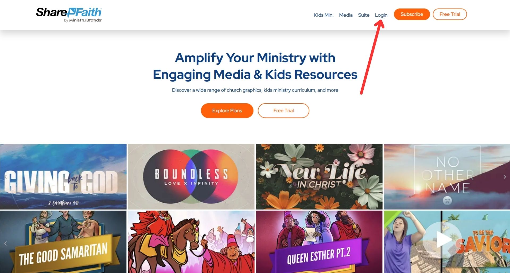
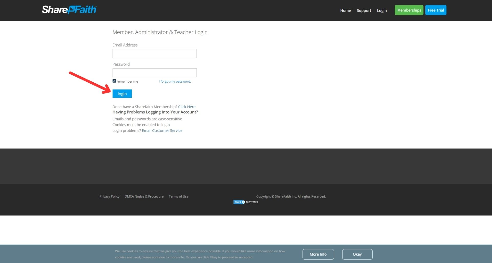
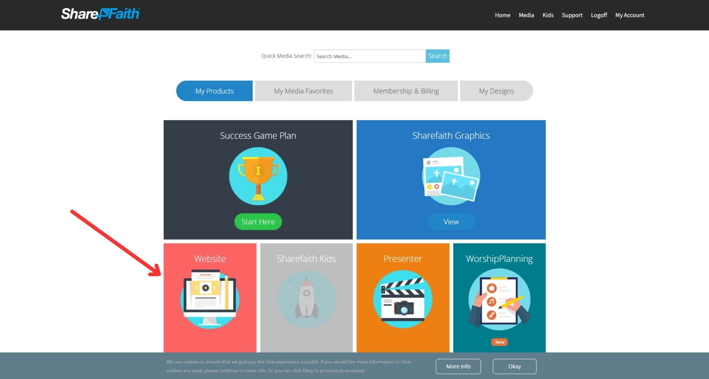
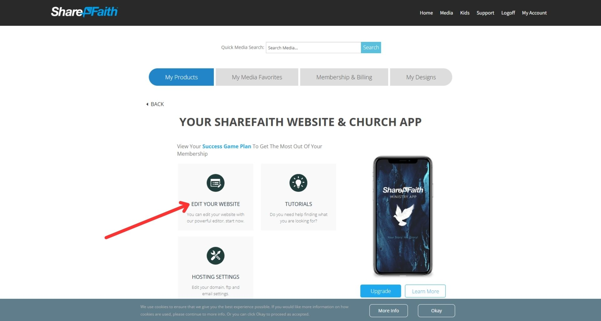
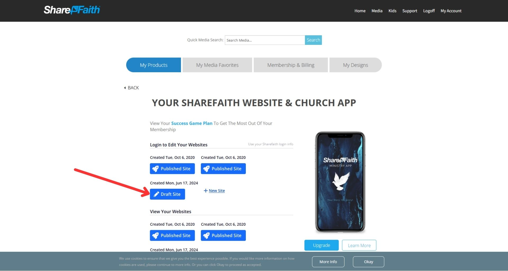
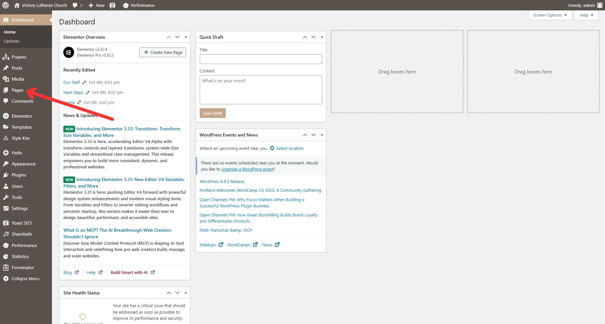
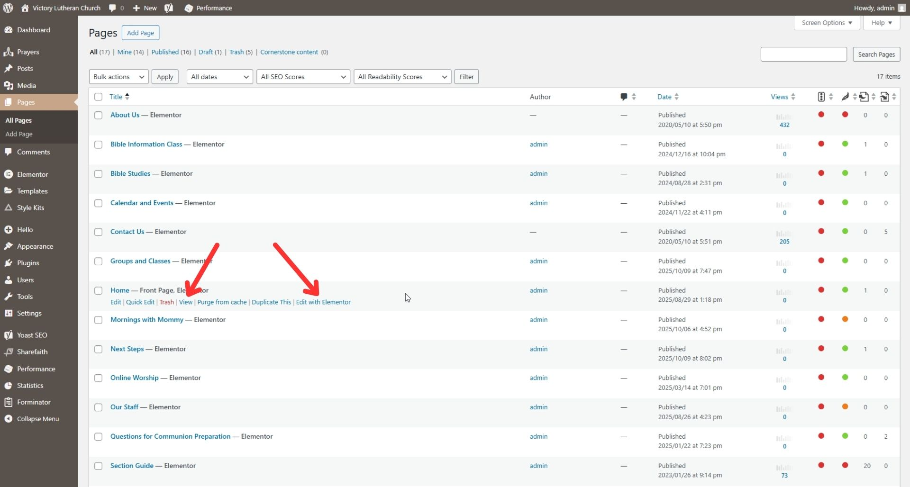

Website Access
Website Access
Use this guide to access Victory's new website. Click on the images to expand them.
WordPress Dashboard
- Go to sharefaith.com.
- Click "Login" in the upper left.

- Enter the login details and click "Login".

- Click the "Website" card on the ShareFaith account dashboard.

- Click "Edit Your Website".

- Click "Draft Site".

Website Frontend
- In the sidebar, click "Pages".
Note:
On mobile, you may have to click "Pages" then "All Pages".

- Find the page you wish to visit and hover over its table row.
- Click "View" to view the page as a visitor or "Edit with Elementor"
to edit the page.

×